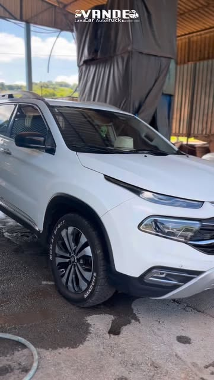
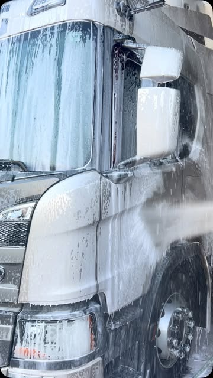
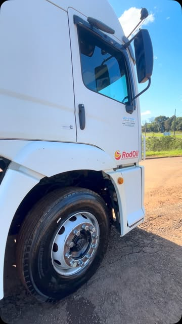

Lavagem a seco
Limpeza cuidadosa, destacada entre os serviços divulgados pela própria empresa.
Auto & Truck • Pato Branco
Lavagem a seco, estética e higienização para cuidar do seu veículo por dentro e por fora.
Seu veículo bem cuidado
O Lava Car Vande atende veículos leves e pesados em Pato Branco, reunindo lavagem, estética e higienização em um só lugar.
Acompanhar no Instagram ↗Serviços
Escolha o que seu veículo precisa e fale direto com a equipe para confirmar o atendimento.
Limpeza cuidadosa, destacada entre os serviços divulgados pela própria empresa.
Tratamento visual para valorizar acabamento, brilho e apresentação do veículo.
Cuidado interno para tornar o ambiente do veículo mais limpo e agradável.
Atendimento para carros, utilitários e caminhões, conforme divulgado no perfil oficial.
Trabalho real
Registros publicados pelo perfil oficial do Lava Car Vande.



“Serviço muito bom
Onde estamos
R. Papa João XXIII, 528
São Cristóvão, Pato Branco - PR
CEP 85508-050
O horário completo não está publicado no perfil do Google. Consulte a disponibilidade pelo WhatsApp.
Traçar rota ↗Atendimento facilitado
Preencha as informações e abra a conversa no WhatsApp com a mensagem pronta.